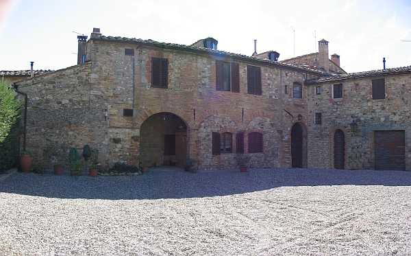
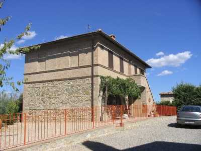
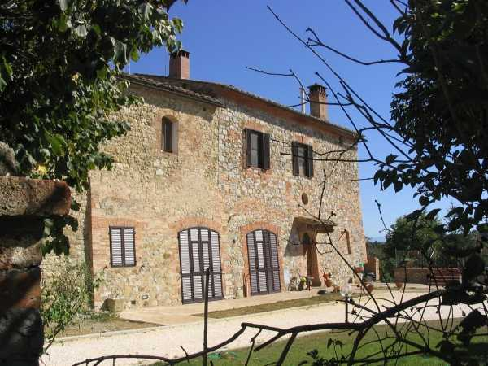

Quercegrossa (Ricordi e memorie)
CAPITOLO I - LUOGHI E PODERI
(MACIALLA)
Cliccami per ritornare all'Indice poderi
Vai all'Indice dei Capitoli
MACIALLA

La fattoria di Macialla, posta sulla sinistra della strada regionale a poco più di 1 km da Quercegrossa provenendo da Siena, è compresa nel Comune di Castelnuovo a motivo della strada che fino al 1927 le rimaneva a destra passando davanti alla villa. In antico, luogo della parrocchia di S. Stefano alla Ripa, quindi di Basciano e poi Quercegrossa dal 1884. L’originale teoria del Merlotti che fa risalire il nome al tempo della guerra gotica del 500 d.C. e a una battaglia che vi si svolse è probabilmente priva di fondamento, ma tutto può essere; certamente l’antichità del luogo non viene messo in dubbio. Nel 1825 risulta essere composto da un solo edificio descritto come casa colonica di bq. 2000 (748 mq.) con fonte, capanna e aia (nella foto il corpo centrale più antico). Vi si leggono sul fabbricato una infinità di interventi e modifiche, ma il complesso visto da Sud, provenendo da Siena, si presenta compatto e massiccio. La residenza padronale definita "villa" rimane dalla parte opposta, incorporata nella costruzione senza particolari distintivi architettonici. Nella seconda metà dell’Ottocento è ribattezzata "Villa Fortuna" e il podere è detto spesso "Maciolla". Un altro nome ricorrente è Macialla Londa. Tra gli interventi più importanti si segnala quello del 1886 con l’aggiunta nella parte di Nord-Est che conferisce al fabbricato una pianta a forma di elle.

Poi, nel 1927, venne costruita l’abitazione del terzo contadino chiamata "Ristoro", (foto a sinistra) a pochi metri dal nucleo primitivo, creando così uno spazio interno, tipo piazzale, tra le due costruzioni. La nuova casa accolse la famiglia Rossi e successivamente i Giulianini. Il podere di Macialla risulta proprietà dei Cinuzzi fin dal Cinquecento e dopo madonna Livia, che vi abita e vi muore l’11 agosto 1598, si estende con Mariano ai primi anni del secolo seguente per poi passare nei beni dei Piccolomini ricordati fin dal 1611 e tra gli intestatari ci sono Giovanni Battista e Muzio, del cosiddetto ramo di Modanella. Attraverso la figlia di Muzio, Caterina, che sposa Flavio Piccolomini, la proprietà entra nella linea dei Piccolomini - Naldi - Bandini e trasmessa ai figli Francesco, Niccolò, Alessandro e Marco Antonio che compaiono già proprietari nel 1825 pur essendo tutti giovani tra i 10 e i 15 anni. Quarant’anni dopo, nel 1862, passa tutto a Marco Antonio e qualche anno dopo, nel 1867, alla figlia Caterina. Quest’ultima priva di eredi lascia ai cugini Flavio, Giulio, Sallusto e Carlo, figli di Francesco, che ereditano nel 1875. Inspiegabilmente, tre anni dopo, la proprietà di Macialla ritorna al loro padre Francesco, cavaliere di S. Stefano e ciambellano Granducale, che la condivide col fratello Niccolò e i signori Cinelli dr. Francesco ed Ersilia. Nel 1886, dopo i ricordati lavori di edificazione, la proprietà è divisa tra la vedova Stella Fracassi per una parte mentre l’altra metà va a Vittorio Bandini - Piccolomini fu Niccolò. Non passano cinque anni che si modificano ancora le quote dell’intera proprietà e nel 1890 Stella Fracassi ne detiene i 4/6 mentre Bandini Piccolomini Rosa fu Niccolò, 1/6, e Mercuri Matilde di Vincenzo vedova di Vittorio Bandini, 1/6. Ma i passaggi ereditari non sono finiti perché due anni dopo, per la morte di Matilde, Stella Fracassi ottiene i 5/6 del podere e alla rammentata Rosa rimane il suo sesto. Finalmente trascorrono 25 anni di pace e si deve attendere la morte di Stella Fracassi per dare il via ad un nuovo valzer di eredi che ci porterà alla proprietà ultima dei Vegni. Infatti, morta Stella nel 1914, Rosa, che nel frattempo ha sposato Augusto Mannucci Benincasa il vero padrone di fine Ottocento, ne eredita la parte, unificando così la proprietà che per successione passa tutta nel 1922 al figlio Niccolò e alle sorelle legittimarie Caterina e Vittoria. Ceduta da Niccolò Mannucci la propria parte alle sorelle nel 1924, queste dopo tre mesi, nel luglio, vendono tutto a Benedetto Forti, domiciliato a Siena. Finisce così la secolare proprietà dei Piccolomini. In seguito è padrone Nemo Forti, fratello del precedente morto nel 1930, e infine, nel 1936, come dote eredita Monaci Virginia fu Eugenio nei Vegni, di Sulmona. Il noto prof. Vegni, suo marito, sarà l’ultimo padrone di Macialla, prima della fine.

La fattoria di Macialla fin dal Cinquecento registra, oltre alla saltuaria residenza padronale nella villa (foto a sinistra), la presenza di un contadino e di più pigionali, fino a tre o anche di soli tre pigionali, per circa mezzo secolo, dopo l’edificazione di Maciallina. Nel 1592 possiede un’oliviera macinate e nel 1749 per pochi anni vi lavora un fabbro, certo Pietro Zuccherini. Tra i primi nomi conosciuti di mezzadri e pigionali si trova Mariano Ferozi nel 1572, Piero Meaccj nel 1589 e Antonio Lodoli, mezzaiolo della signora Livia. La famiglia Porcelli sono coloni a inizio Seicento, ma è inutile elencarli tutti e fra le famiglie conosciute si ricordano i Brogi, i Fiaschi e a fine Ottocento i Finetti quando da pochi anni, nel 1874, si ha notizia che i poderi sono divenuti due, più due pigionali. Questi sono gli ultimi affittuari perché da allora Macialla ospiterà solo contadini; prima due, come detto, poi tre dal 1928. In quell’anno entra la famiglia Rossi mentre i Carusi arrivarono nel 1927. I Rossi lasciano poi il posto ai Giulianini nel 1940. Finetti, Carusi e Giulianini, resteranno fino agli anni Sessanta, sostituiti poi dai Bianciardi, per pochi mesi, e infine i Brogi, gli ultimi mezzaioli riciclati salariati. I tre poderi della fattoria, che si estendevano per lo più verso i piani del Bozzone e solo una piccola parte rimaneva tra Macialla, il Castellare e l’Arginano, avevano dimensioni medie intorno ai dieci ettari come quello del Carusi mentre il Finetti e il Giulianini avevano circa otto ettari di terra quasi tutta coltivata. I Finetti raccoglievano dai 100 ai 120 quintali di grano, massimo 125 nelle annate buone. Tenevano sei bestie nella stalla e due scrofe. Ammazzavano un maiale l’anno e ne vendevano due o tre. Famiglia di sei/otto persone.
La fattoria vista da sud.
L'ingresso moderno al podere e vista sulla parete esterna dell'edificio che mostra tracce di un'antica scialbatura di colore rosa.
Capitolo successivo Maciallina
Inizio pagina
Vai all'Indice dei Capitoli
|